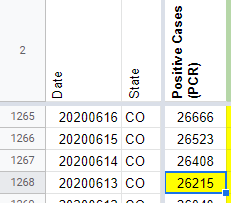
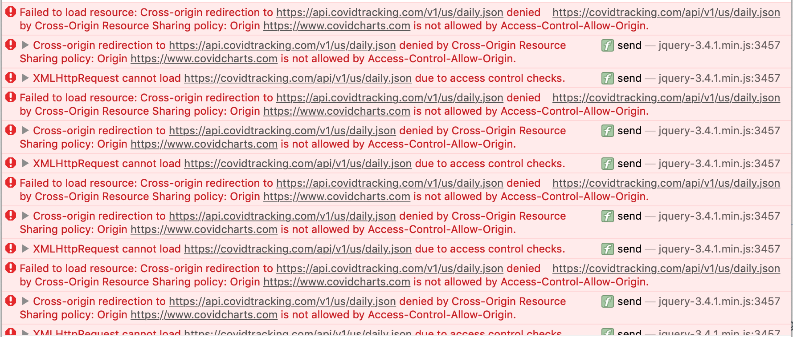
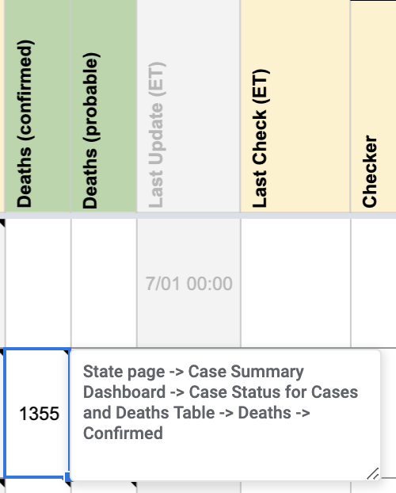
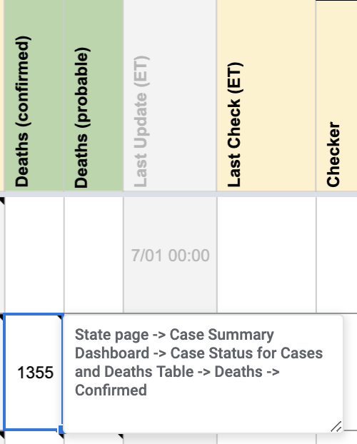

#1106: [CO] Patch 02/19/21 error in Total PCR tests (people) and Negative PCR tests (people)
Issue number 1106
hmhoffman opened this issue on February 20, 2021, 2:56 PM PST
State: CO
Dates affected: 02/19/21
Describe the issue: On February 19, 2021, we had in error in Colorado's Total PCR tests (people). This also affected Negative PCR tests (people), which is calculated as Total PCR tests (people) minus Confirmed cases.
Screenshot with correct data: https://covid-tracking-project-data.s3.us-east-1.amazonaws.com/state_screenshots/CO/CO-quaternary-20210219-231911.png
Comments
Rows edited: 1 CO 2021-02-19 negative: 2126610 (was 2156610)
#1106: [CO] Patch 02/19/21 error in Total PCR tests (people) and Negative PCR tests (people)
Issue number 1106
hmhoffman opened this issue on February 20, 2021, 2:56 PM PST
State: CO
Dates affected: 02/19/21
Describe the issue: On February 19, 2021, we had in error in Colorado's Total PCR tests (people). This also affected Negative PCR tests (people), which is calculated as Total PCR tests (people) minus Confirmed cases.
Screenshot with correct data: https://covid-tracking-project-data.s3.us-east-1.amazonaws.com/state_screenshots/CO/CO-quaternary-20210219-231911.png
Comments
CO 2021-02-19 totalTestsPeopleViral: 2522901 (was 2552901)
Rows edited: 1 CO 2021-02-19 negative: 2126610 (was 2156610)
#1081: [CO] Patch late 01/26/21 metrics
Issue number 1081
hmhoffman opened this issue on January 27, 2021, 2:55 PM PST
State: CO
Dates affected: 01/26/21
Describe the issue: On January 26, 2021, Colorado's Positive Cases PCR, Probable Cases, Negative Cases, Curr Hosp, Confirmed Deaths, and Probable Deaths did not update by our publication time.
Comments
Rows edited: 1 CO 2021-01-26 negative: 1991411 (was 1982404) hospitalizedCurrently: 740 (was 737) recovered: 20673 (was 20569) deathConfirmed: 4809 (was 4801) deathProbable: 708 (was 704) probableCases: 18840 (was 18539) positiveCasesViral: 369780 (was 367746)
#1081: [CO] Patch late 01/26/21 metrics
Issue number 1081
hmhoffman opened this issue on January 27, 2021, 2:55 PM PST
State: CO
Dates affected: 01/26/21
Describe the issue: On January 26, 2021, Colorado's Positive Cases PCR, Probable Cases, Negative Cases, Curr Hosp, Confirmed Deaths, and Probable Deaths did not update by our publication time.
Comments
Rows edited: 1 CO 2021-01-26 negative: 1991411 (was 1982404) hospitalizedCurrently: 740 (was 737) recovered: 20673 (was 20569) deathConfirmed: 4809 (was 4801) deathProbable: 708 (was 704) probableCases: 18840 (was 18539) positiveCasesViral: 369780 (was 367746)
#1006: [CO] Deaths due to COVID vs. deaths among cases source switch
Issue number 1006
karaschechtman opened this issue on December 11, 2020, 10:34 AM PST
Labels Data quality
State or US: CO
Describe the problem Colorado's deaths due to COVID-19 metric is lagging its deaths among cases metric. On September 1, there was only 97 difference: 1946 deaths among cases, vs. 1849 deaths due to COVID. On December 11, there is a 759 difference—3759 deaths among cases, as opposed to 3005 deaths due to COVID. This means 20% of deaths among cases do not have death certificate data, vs. 5% in September, indicating a lag.
Link to data source https://covidtracking.com/data/state/colorado/screenshots CO's raw data files for confirmed/probable death breakdowns: https://www.arcgis.com/home/webmap/viewer.html?url=https://services3.arcgis.com/66aUo8zsujfVXRIT/ArcGIS/rest/services/colorado_covid19_daily_state_statistics_cumulative/FeatureServer&source=sd

Comments
We are adding the breakdown for confirmed/probable from 5/15 onward because before then they were not reported on the website and do not sum CO after.txt CO Before.txt
#993: [CO] Patch 12/2 Positive antibody tests (specimens) and Negative antibody tests (specimens)
Issue number 993
hmhoffman opened this issue on December 2, 2020, 8:14 PM PST
State: CO
Dates affected: 12/2
Describe the issue: On December 2, 2020, Colorado did not update their Positive antibody tests (specimens) or Negative antibody tests (specimens) before the time of our daily update.
Comments
AFTER:

BEFORE:

#988: [ND] Backfill Deaths (Confirmed and Probable), Deaths (Confirmed) to reflect all deaths rather than deaths due to COVID
Issue number 988
muamichali opened this issue on December 1, 2020, 11:19 AM PST
Labels Data quality
State or US: North Dakota
Describe the problem Over the past week, a gap has opened between the number of COVID-19 deaths North Dakota's health department reports and The COVID Tracking Project’s counts of deaths in the state. On November 30, North Dakota’s health department dashboard reported 927 cumulative COVID-19 deaths, but The COVID Tracking Project recorded 680. This is because we track deaths due to COVID, instead of deaths among cases in the state.
It’s clear that a reporting backlog is to blame for most of the widening discrepancy between figures: The share of COVID-19-positive individuals who died in North Dakota with death certificates still pending has doubled since the beginning of November. To better reflect the reality of rising deaths in North Dakota, we are changing our method for counting deaths in the state to the other main paradigm for tracking deaths: counting deaths among cases.
Link to data source https://covidtracking.com/data/state/north-dakota/screenshots
Comments
[ ND.xlsx ](url)
#983: [CO] Patch 11/28 Positive antibody tests (specimens) and Negative antibody tests (specimens)
Issue number 983
hmhoffman opened this issue on November 28, 2020, 9:22 PM PST
State: CO
Dates affected: 11/28
Describe the issue: On November 28, 2020, Colorado's Positive antibody tests (specimens) and Negative antibody tests (specimens) updated after we published our daily update.
Comments
BEFORE:
AFTER:
#980: [CO] Patch 11/18 missed positive/negative antibody test update
Issue number 980
hmhoffman opened this issue on November 25, 2020, 6:52 PM PST
State: CO
Dates affected: 11/18
Describe the issue: On 11/18, Colorado updated their Positive antibody tests (specimens) and Negative antibody tests (specimens) after our daily update.
Comments
BEFORE:
AFTER:
#960: [CO] Shift timeseries by a day and patch a few values that do not match dashboard layer
Issue number 960
muamichali opened this issue on November 18, 2020, 1:19 PM PST
Labels Data quality
State or US: Colorado
Describe the problem
- Because of the timing of the data entry shift, we are regularly a day behind in our capture of Colorado's reporting. We are going to shift the entire timeseries in order to match up with what we would have captured on an evening shift each day from Colorado.
- We are also going to patch up a few values to Total Tests PCR (People), Cumulative Hospitalizations, Deaths , and Cases (Confirmed and Probable) columns from a download from Colorado's website
Link to data source https://services3.arcgis.com/66aUo8zsujfVXRIT/ArcGIS/rest/services/colorado_covid19_daily_state_statistics_cumulative/FeatureServer/0
Comments
Source file - raw download from Colorado source.CO - Colorado All dashboard data 20201118.csv.txt
Initial CTP timeseries CO-20201118-Before.csv.txt
CTP timeseries shifted by one day CO - Colorado after shifting timseries .csv.txt
Final CTP timeseries CO-MM-20201118-done.csv.txt
Question: when will github allow CSV attachments?
#953: [CO] Patch 11/11 timestamp
Issue number 953
hmhoffman opened this issue on November 16, 2020, 8:14 AM PST
State: CO
Dates affected: 11/11
Describe the issue: The 11/11 timestamp for CO was entered as 11/10 23:59, but should have been 11/09 23:59.
Comments
BEFORE:
AFTER:
#848: [CO] Fixing confirmed/total positive issues on 4/25, 4/29, 5/8, 5/10, 5/11, 6/13, 8/27
Issue number 848
the-daniel-lin opened this issue on September 18, 2020, 9:59 AM PDT
Labels Backfill Data quality Historical Data
State or US: Colorado
Describe the problem While doing probables backfill in https://github.com/COVID19Tracking/issues/issues/812, I discovered three main issues between CTP values and the state screenshots/archive:
-
We sourced a few of our total positive values from the respective day's PR. The issue with this is that, while those values were the most up to date values at the time of the PR, they were unaligned with the screenshots and the 1 day lag on the dashboard which throws off the proposed probable values' alignment. The days we used PR values are 4/29, 5/8, 5/10, and 5/11. These values should be changed to 14316, 18371, 19375, 19703, respectively.
-
Separate from these PRs, we had two values entered incorrectly on 4/25 (12256) and 8/27 (52229). These values should be changed to 12255 and 52228, respectively, to reflect the screen-shotted values from those days and the values from the archived files mentioned above. These revisions are also in blue in the proposed section.
-
Lastly, we entered the total positive value in the confirmed case column on 6/13. The value should be changed from 28822 to 26215 to reflect the screenshotted value/archived value.
Links to data sources 4/25: https://covid-tracking-project-data.s3.us-east-1.amazonaws.com/state_screenshots/CO/CO-20200424-180528.png ; https://docs.google.com/spreadsheets/d/1QcI_QvssZpVxT5ib6yHoeHchLIuIIZkX45eKrn4ciCU/edit#gid=1892357304
4/29: https://covid-tracking-project-data.s3.us-east-1.amazonaws.com/state_screenshots/CO/CO-20200429-000541.png
5/8: https://covid-tracking-project-data.s3.us-east-1.amazonaws.com/state_screenshots/CO/CO-20200507-180530.png
5/10: https://covid-tracking-project-data.s3.us-east-1.amazonaws.com/state_screenshots/CO/CO-20200509-180520.png
5/11: https://docs.google.com/spreadsheets/d/1e2TLX1eJw9kueTZBssoA9eRWIwEtpgC3HZODao9mGGo/edit#gid=1282281468 ; https://covid-tracking-project-data.s3.us-east-1.amazonaws.com/state_screenshots/CO/CO-20200511-120513.png
6/13: https://drive.google.com/drive/folders/1bBAC7H-pdEDgPxRuU_eR36ghzc0HWNf1
8/27: https://docs.google.com/spreadsheets/d/1sU6w75m7SXuRR7gZxMiMhFksez6D9V2pGFjFZaLwRso/edit#gid=1728791480 (confirmed/probable breakdown not available in screenshots due to changed dashboard)
This issue solves https://github.com/COVID19Tracking/issues/issues/423
Comments
BEFORE:
4/25 - 5/11:

6/13:

8/27:
AFTER:
4/25 - 5/11:

6/13: 
8/27

#812: [CO] Probable backfill 4/24 - 7/27
Issue number 812
the-daniel-lin opened this issue on September 4, 2020, 8:06 AM PDT
Labels Backfill Data quality Historical Data
State or US: Colorado
Describe the problem On 7/28, CTP introduced an explicit probables column. Backfilling through 4/24 (when CO first separated out confirmed cases on their dashboard) by subtracting confirmed cases from total cases. Fixing issues with confirmed/probables in https://github.com/COVID19Tracking/issues/issues/848
Link to data source We have screenshots of probables through 4/24 to reference. We also have a state-provided archive with probable values: https://drive.google.com/drive/folders/1bBAC7H-pdEDgPxRuU_eR36ghzc0HWNf1
4/24 screenshot: https://covid-tracking-project-data.s3.us-east-1.amazonaws.com/state_screenshots/CO/CO-20200424-000533.png
Comments
BEFORE:


AFTER:

Backfilled values: 3162 3161 3158 3151 3136 3112 3095 3101 3090 3084 3036 3029 3023 3013 3002 3004 3002 2979 2978 2928 2889 2897 2896 2897 2899 2896 2871 2860 2831 2828 2824 2805 2781 2755 2746 2739 2741 2734 2683 2670 2647 2633 2607 2609 2607 2607 2584 2560 2556 2544 2529 2516 2512 2503 2477 2468 2429 2431 2441 2363 2327 2295 2285 2280 2280 2253 2218 2157 2095 2067 2024 2004 1980 1958 1940 1880 1842 1823 1825 1824 1786 1726 1717 1709 1637 1622 1590 1545 1527 1497 1424 1370 1335 1189 974
#797: [CO] Fill frozen values for probable+confirmed cases after state changed dashboards
Issue number 797
space-buzzer opened this issue on August 27, 2020, 8:50 PM PDT
Labels Backfill Data quality Historical Data
The data is available in files here: https://drive.google.com/drive/folders/1bBAC7H-pdEDgPxRuU_eR36ghzc0HWNf1
Comments
Filled the data from COs archive folder for the relevant days Confirmed, Positive cases and Antibody negative and positive tests


#776: Server CORS (Access-Control-Allow-Origin) header issue
Issue number 776
loglow opened this issue on August 18, 2020, 10:50 PM PDT
Labels Data quality
Describe the problem
The server does not appear to be returning Access-Control-Allow-Origin headers along with API requests.
This results in web browser errors such as:
XMLHttpRequest at 'https://covidtracking.com/api/v1/us/daily.json' from origin 'null' has been blocked by CORS policy: No 'Access-Control-Allow-Origin' header is present on the requested resource.
I believe that the API server should be returning an Access-Control-Allow-Origin: * header, and that this would resolve the problem.
I don't have prior experience with these kinds of issues, so please forgive my ignorance if any of this is incorrect. I only began receiving these errors today for the first time, and I've been using this API for months now. I've temporarily mitigated the problem by routing all API requests through https://cors-anywhere.herokuapp.com/ but this doesn't seem like a great permanent solution.
Thanks for all your time and efforts!
Comments
@kevee can you please transfer to the website repo? 🙏
Well, this just became more urgent because https://cors-anywhere.herokuapp.com/ is now giving me 429 Too Many Requests errors. Please fix ASAP.
Safari flavor of errors below. Above was Chrome.
PS. Firefox 79.0 (latest version) is working because apparently it's not yet strictly enforcing CORS policy.
For the above screenshots:
- Chrome is 84.0.4147.135
- Safari is 13.1.2 (14609.3.5.1.5)
Per our API changelog, please use https://covidtracking.com/api/v1/us/daily.json instead of https://covidtracking.com/api/v1/us/daily.json. The website is doing a 301 redirect to the new API domain, but for some reason Netlify is stripping CORS out from that feedback, so I'll check in with them:
curl -I https://covidtracking.com/api/v1/us/daily.json
HTTP/2 301
content-type: text/plain
location: https://api.covidtracking.com/v1/us/daily.json
Thanks!
#716: [CO] Backfill Test Encounters metric for CO
Issue number 716
space-buzzer opened this issue on July 31, 2020, 12:14 PM PDT
Labels Backfill Missing Data
CO publishes a "Test Encounters" value, and we recently added it to our worksheet, we need to backfill past data for this metric
We started collecting numbers on 7/27, when CO started publishing them on the dashboard.
To fill the values before 7/27, we used the "Testing Encounters" daily bar chart, to calculate cumulative sum by date. The values we used in this initial population of the time series were calculated from data as downloaded on 8/1.
We're using this calculated backfill only for dates before the 27th, and going forward (despite the bar chart with daily test encounters being continuously back-filled) we're only going to use the number posted on the dashboard. Since the numbers on the dashboard normally correspond to data as of two days previous, we are shifting the total test encounters to reflect what would have been displayed on the dashboard on the corresponding date.
Comments
Done
Before:
After

#607: [CO] Positive Cases 17-July
Issue number 607
space-buzzer opened this issue on July 12, 2020, 2:38 PM PDT
Labels Data quality
On 12-July, CO reported 36,591 cases. Needs to be fixed from 36,951

Comments
Before:
After:
#572: [ID] Historicals Fill out historical info for current COVID-19 hospitalizations & ICU
Issue number 572
muamichali opened this issue on July 3, 2020, 7:36 AM PDT
Labels Data quality
State or US: Idaho
Describe the problem We did not capture these values before but they are available, so we should fill out the historical values
Link to data source https://public.tableau.com/profile/idaho.division.of.public.health#!/vizhome/DPHIdahoCOVID-19Dashboard_V2/Story1 Click Hospitalizations
Comments
Before: No values After 2020-07-03__CTP_ID_Update.xlsx
Hey @muamichali, I took a look at Idaho's Tableau dashboard and exported data from the Hospitalizations tab. Attached is a spreadsheet with a proposed update - please see "CTP_Update" tab: 2020-07-03__CTP_ID_Update.xlsx
Can you please review before we make an update for 2020-03-26 to 2020-06-28 for In ICU – Currently and Hospitalized – Currently?
Thanks! Camille
Link to Data Source(s):
- ICU: "Number of hospitalized and ICU with confirmed COVID-19" C_in_ICU_Full_Data_data.xlsx
- Hospitalizaitons: "Patients currently hospitalized in an inpatient bed who have suspected or confirmed COVID-19" S_and_C_Hospitalized_Full_Data_data.xlsx
Update - closing this ticket and moving to double-check.
#565: [CO] PCL Historicals and WS2
Issue number 565
karaschechtman opened this issue on July 1, 2020, 5:26 PM PDT
Labels PCL/SVP Historicals
Starting May 15, CO reports four different numbers about deaths: "deaths among cases," confirmed/probable breakdowns for "deaths among cases," and "deaths due to COVID-19." Deaths among cases captures information about all deaths in probable or confirmed COVID cases (e.g. determined by testing data for confirmed, syndromic or epidemiological evidence for probable), while "deaths due to COVID-19" tracks cases where COVID is listed on the death certificate.
{kind=link}
Right now, we fill out our columns like this: Deaths (confirmed+probable): "deaths among cases" Deaths (confirmed): "deaths among cases (confirmed)" Deaths (probable): "deaths among cases (probable"
However, to maintain consistency with other states (e.g. ND) that provide data about whether COVID was the cause of death , we do not want to track "deaths among cases" but "deaths due to COVID-19," which tracks death certificate data. Hence for May 15 onward, we are going to switch to:
Deaths (confirmed+probable): "deaths due to COVID 19" Deaths (confirmed): no data (since "deaths due to COVID-19" is not broken down to confirmed/probable) Deaths (probable): "no data (since "deaths due to COVID-19" is not broken down to confirmed/probable)
We will add back the data for "deaths among cases (confirmed)" at a later date when we add a column for deaths w/ positive lab tests but not necessarily COVID as a cause of death on a death certificate.
Comments
Updating CO tooltips and values
Before
 


After


NOTE: we will need to add a private note to explain the drop. I will draft it once I've fixed all the historicals.
Updating historicals for CO (from screenshots, account for 1 day lag due to late CO update time, e.g. our update 7/1 picked up 6/30 6:30 pm data):
{kind=link}
Before
After

CO also provided its confirmed/probable breakdown before it provided figures on deaths due to COVID-19 on 5/15. We record these values sporadically between 4/29-5/3 and 5/12-5/15. These confirmedvalues still reflect confirmed deaths within "deaths in COVID-19 cases" (any lab-confirmed death) so I am deleting them.
Before:
 After
After

Adding public note: "On 5/15 (which we caught on our update 5/16), Colorado started providing a new figure for deaths where COVID-19 is listed on the death certificate, in addition to the figure it already provided, deaths among laboratory-confirmed and probable cases (whether or not COVID was a cause of death). On 7/1, we revised our historical data to reflect the deaths certificate figure instead of the deaths among cases. As such, it appears as if there is a drop from 1091 deaths on 5/15 to 878 on 5/16 in our data."
#529: [CO] Updating historicals for Total PCR Tests (People)
Issue number 529
qpmnguyen opened this issue on June 25, 2020, 7:43 AM PDT
Labels Historical Data
State or US: CO
Describe the problem Updating historical values for "Total PCR Tests (People)" for CO prior to implementation of this column. Historicals updated from 3/17 to 5/14, using the screenshot captured at 6 - 7 pm the previous day. Unfortunately due to lack of screenshots, gaps will exist on 3/27, 4/9 and 5/18.
Link to data source https://covidtracking.com/data/state/colorado#historical
Comments
Before screenshots for 5/14 and 5/13
After screenshots for 5/14 and 5/13
All CO data has been backfilled up till March 16th. Some gaps due to missing relevant screenshots.
#423: CO Total Tests Dropped on 5/12
Issue number 423
schmian opened this issue on May 15, 2020, 2:17 PM PDT
Labels not stale
"I think there's an issue with Colorado 5-12-20 info. It indicated that there was "-133" new tests, which makes no sense."
Based on the screenshots form 5/11 it appears that Positive Cases should have be 19,703 instead of 19,899, causing the there to be negative new test and cases on 5/12
Comments
The higher numbers entered on 5/11 came from a press release but they never showed up on the dashboard. I am revising 5/11 CO numbers to the dashboard.
See https://covid-tracking.slack.com/archives/C0116LT5CTT/p1590073899348700
BEFORE
AFTER

It seems like you edited the number for 5/10 instead of 5/11. From screenshots, the numbers for those few days should be: 5/10 - 19375 5/11 - 19703 5/12 - 19879
CTP:
Colorado State Page 5/10:
Colorado State Page 5/11:
Colorado State Page 5/12:
Hi @the-daniel-lin oops - I did not see this --- will work now (or get @space-buzzer to do it lol)
This issue has been automatically marked as stale because it has not had recent activity. It will be closed if no further activity occurs. Thank you for your contributions!
This is being resolved here: https://github.com/COVID19Tracking/issues/issues/848
#352: CDC Has Slashed COVID-19 Deaths by 40%
Issue number 352
JustOneGuyHere opened this issue on May 3, 2020, 5:29 PM PDT
Labels Data source
I suggest publishing both sets of numbers. I have used this site to track the numbers, but they need to be accurate.
https://www.cdc.gov/nchs/nvss/vsrr/covid19/index.htm
Comments
Hi @JustOneGuyHere
Please see the CDC Data tracker here https://www.cdc.gov/covid-data-tracker/index.html
Currently 65,735 deaths are reported on the page.
Thanks, censor.
On Sun, May 3, 2020 at 6:35 PM Michal Mart notifications@github.com wrote:
Closed #352 https://github.com/COVID19Tracking/issues/issues/352.
— You are receiving this because you were mentioned. Reply to this email directly, view it on GitHub https://github.com/COVID19Tracking/issues/issues/352#event-3298064864, or unsubscribe https://github.com/notifications/unsubscribe-auth/APOCEYR7QRRQTI7T4VA4XO3RPYLWJANCNFSM4MYLPALA .
#331: COVID19Tracking vs worldometers/info/coronavirus
Issue number 331
Fyjimojo opened this issue on April 29, 2020, 11:19 AM PDT
Labels NYC Probable Deaths
Hello. I have been tracking COVID-19 on worldometers.info/coronavirus since mid-March.
You report U.S. deaths at 52,525 as of yesterday.
Yesterday, worldometers.info/coronavirus reported 57,862.
Which number is correct?
Thank you!
Comments
Both numbers are defensible. The difference is primarily attributable to the way New York City and New York State differ in tracking deaths.
See: https://twitter.com/COVID19Tracking/status/1254161668671541248?s=20
We anticipate New York State will incorporate probable deaths soon, as will we, though maintaining our laboratory-confirmed number in the states where it is possible.
Alexis
On Wed, Apr 29, 2020 at 11:19 AM Fyjimojo notifications@github.com wrote:
Hello. I have been tracking COVID-19 on worldometers.info/coronavirus since mid-March.
You report U.S. deaths at 52,525 as of yesterday.
Yesterday, worldometers.info/coronavirus reported 57,862.
Which number is correct?
Thank you!
— You are receiving this because you are subscribed to this thread. Reply to this email directly, view it on GitHub https://github.com/COVID19Tracking/issues/issues/331, or unsubscribe https://github.com/notifications/unsubscribe-auth/ACS7NYKMDY22MCN7SKGJ76DRPBVUBANCNFSM4MT6SUNQ .
-- Alexis Madrigal Staff Writer | The Atlantic Co-Founder | The Atlantic's COVID Tracking Project, covidtracking.com m. 415 602 4953
This can't explain the entire difference for US total deaths, which as of this morning is approximately 6,000.
#309: CO data does not match state website
Issue number 309
stevemcconnell opened this issue on April 26, 2020, 7:08 PM PDT
for example, this data set has the following info for positive tests by date: 4/23 10,878 4/24 11,262 4/25, 12,256 4/26, 12968
The CO state website (listed as the best source of data on the covid tracking website) lists this data 4/23 12,256 4/24 12,947 4/25, 13,441 4/26, not listed yet
Similarly, on new deaths, the covid tracking project shows 44 new deaths on 4/24, whereas the CO state website shows 2.
These are not the only issues, just illustrations to show the data doesn't match.
Comments
This issue has been automatically marked as stale because it has not had recent activity. It will be closed if no further activity occurs. Thank you for your contributions!
Thank you for your input @stevemcconnell ! Colorado updated its total tests and deaths after our publish time cutoff. If a state updates total tests or deaths after that time, we catch that update on the following day. So far, the historicals we keep seem to agree with this pattern. We're working internally to best represent this data as well as shifting our time to catch states that update only slightly after our publish time.
#295: Is it possible to have a time-series dataset for Tracking Race and Ethnicity in the COVID-19 Pandemic Blog Data?
Issue number 295
riccardograziani opened this issue on April 25, 2020, 9:19 AM PDT
Labels Feature Request
I would like to ask you if it is possible to obtain the following dataset as time-series dataset:
https://docs.google.com/spreadsheets/d/e/2PACX-1vTfUQPxkhP_CRcGmnnpUBihnTNZ9Z8pcizII4_sc2o2n3opOoAJdAM4CRTJBI339tou8LWnQrqbTMgH/pubhtml?gid=1129119811&single=true
Best, Riccardo
Comments
This issue has been automatically marked as stale because it has not had recent activity. It will be closed if no further activity occurs. Thank you for your contributions!
Thank you for the request @riccardograziani I will pass it on to the race data team.
I also wanted to let you know that we launched the new Covid Racial Data Tracker and homepage today https://covidtracking.com/race
Thanks very much for your response!
#253: Michigan COVID
Issue number 253
mlgnight opened this issue on April 22, 2020, 7:20 AM PDT
Labels stale
RE: https://covidtracking.com/data/state/wisconsin#historical
How can the new tests for March 30 be negative??
Comments
This issue has been automatically marked as stale because it has not had recent activity. It will be closed if no further activity occurs. Thank you for your contributions!
This issue has been closed because it was stale for 15 days, and there was no further activity on it for 10 days. You can feel free to re-open it if the issue is important, and label it as "not stale."
#238: Washington COVID
Issue number 238
mlgnight opened this issue on April 20, 2020, 3:48 PM PDT
https://covidtracking.com/data/state/washington#historical positives dropped from 4/19 to 4/20
Comments
Thanks for reporting this issue @mlgnight!
If you scroll down to the top of the page, we publish notes that explain these kinds of issues if we know about them. In this case, it was a data revision by the state (4/19/20) are lower than yesterday. Data cleaning that occurred late on 4/18 removed 190 confirmed cases that were discovered to be out of state residents.
I was just checking WA state data and comparing to yours. I'm sure they won't perfectly line up since the WA state data is probably cleaned/edited from time to time for various reasons (adding/subtracting cases due to data entry errors, or like this one where some individuals were from out of state). I just wanted to make sure that this is to be expected (e.g. once your data is finalized for a particular date, it isn't updated. It might be nice to have a separate tracking database that does automatically update as states update there data. I also checked against the usafact.org dataset, and found similar discrepancies form the official WA state count. Either way, thank you so much for your work!
@jstover79 You are very welcome. If you find data that we need to update and report it here as new issue with state sources, we will do our best to correct historical data.
#226: California COVID Data
Issue number 226
mlgnight opened this issue on April 19, 2020, 7:50 AM PDT
Labels stale
At https://covidtracking.com/data/state/california#historical it appears that the data around April 10-12 seems odd. Flat, then big jump?
Comments
@mlgnight Thank you for reporting. There was an earlier issue https://github.com/COVID19Tracking/issues/issues/217 and the data has been patched. It should be reflected on the site this afternoon around 5.30pm EST.
This doesn't really explain CA's weird ups and downs, but more significantly, the total tests numbers on their data page are clearly rounded. Every day's total ends in -00. Your counts don't match theirs all the time, but they do right now.
Of course you have to use what the states report, but it really would be good to get to the bottom of what's going on with CA's reporting.
This issue has been automatically marked as stale because it has not had recent activity. It will be closed if no further activity occurs. Thank you for your contributions!
This issue has been closed because it was stale for 15 days, and there was no further activity on it for 10 days. You can feel free to re-open it if the issue is important, and label it as "not stale."
#213: CO: new daily report currently hospitalized=858, discharged last 24 hours=203 (4/17)
Issue number 213
catawbasam opened this issue on April 17, 2020, 7:09 PM PDT
https://covid19.colorado.gov/hospital-data
Comments
Thank you so much @catawbasam
We added this to our sources list for CO
Before
After
Data patch was applied to the spreadsheet.
#200: Standard GeoJSON format for the COVIDTracking API?
Issue number 200
ilkkarinne opened this issue on April 16, 2020, 9:02 AM PDT
Labels stale
Hi, a great initiative you have for consolidating US COVID-19 data. I'm the author of the CovidJSON initiative, a standards based GeoJSON data model for infection data. Our goal is to harmonize national and international data interchange of COVID-19 data as geospatial datasets, and to make it easier to collect, publish, analyze and visualize infection data across different data providers and uses.
Would you be interested in testing out the CovidJSON format as an output format for the COVIDTracking API, providing input for improving it, and, in case you like it, promoting it's use for the different COVID-19 stakeholders within US?
I have some live data samples from Finland at https://data.covidjson.org/ and some static examples at https://github.com/spatineo/covidjson/tree/master/examples
Comments
This issue has been automatically marked as stale because it has not had recent activity. It will be closed if no further activity occurs. Thank you for your contributions!
This issue has been closed because it was stale for 15 days, and there was no further activity on it for 10 days. You can feel free to re-open it if the issue is important, and label it as "not stale."
#191: JHU and statnews are using hospitalization data from COVID19Tracker
Issue number 191
catawbasam opened this issue on April 13, 2020, 6:48 AM PDT
Labels stale
Both are very influential sources -- I'd like to propose we focus more on improving hospitalization counts.
Statnews is using cumulative hospitalizations. JHU unfortunately appears to be mixing current and cumulative hospitalizations in their 'hospitalization rate' tab.
JHU dashboard: https://www.arcgis.com/apps/opsdashboard/index.html#/bda7594740fd40299423467b48e9ecf6 "the COVID Tracking Project (testing and hospitalizations)"
STAT Tracker:
https://www.statnews.com/2020/03/26/covid-19-tracker/
"The datasets are drawn from the Johns Hopkins University Center for Systems Science and Engineering, from the COVID Tracking Project, and from USAFacts. In some cases, data on hospitalizations were not available."
Comments
Note: Deleted earlier comment advocating focus on cumulative hospitalizations.
The weight of reporting by states is increasingly tilted toward currently hospitalized, so it might make more sense to fill that out. It is also more directly tied to capacity management.
This issue has been automatically marked as stale because it has not had recent activity. It will be closed if no further activity occurs. Thank you for your contributions!
This issue has been closed because it was stale for 15 days, and there was no further activity on it for 10 days. You can feel free to re-open it if the issue is important, and label it as "not stale."
#124: Michigan negative counts -- COVID19Tracking is behind latest state report
Issue number 124
catawbasam opened this issue on April 2, 2020, 2:22 PM PDT
If they are on weekly updates, we should note that. Otherwise they may not be tracking the tests. Worrisome for one of the top hot-spots.
Comments
Updated numbers are posted to https://www.michigan.gov/coronavirus/0,9753,7-406-98163_98173---,00.html
Cumulative Number of Specimens Tested for COVID-19 - Last Updated 4/2/2020 14:45
| Lab Type | Negative Tests | Positive Tests | Total Specimens Tested |
|---|---|---|---|
| Commercial | 2312 | 592 | 2909 |
| Hospital | 16930 | 5906 | 22450 |
| Public Health | 4303 | 1507 | 5818 |
| Grand Total | 23545 | 8005 | 31177 |
Notes
Notes: This is a new reporting system and additional laboratories will be included over time. Counts of specimens tested positive will not equal number of people with COVID-19. People may have more than one test or may have had their test from an out of state lab. Total samples tested includes test that were negative, positive, and inconclusive. Commercial labs only includes data from LabCorp. Public health labs include the Michigan Department of Health and Human Services Bureau of Laboratories. Counts represent the total specimens tested, not total patients tested. A patient can have more than one specimen tested, therefore the number of specimens tested may be more than the number of patients tested.
Michigan negative counts were not updated "Last updated: 4/02 11:00 ET"
Those counts are for specimens. I did update with even more accurate data. See issue #173
#112: The row of Colorado (CO) state data for 3/31 is a duplicate 3/30
Issue number 112
philgoetz opened this issue on April 1, 2020, 9:15 AM PDT
These can't both be right unless CO reported no data for 3/31:
| 20200331 | CO | 2,627 | 12,737 | 414 | 51 | 15,364 | |
|---|---|---|---|---|---|---|---|
| 20200330 | CO | 2,627 | 12,737 | 414 | 51 | 15,364 | |
| -- | -- | -- | -- | -- | -- | -- | -- |
Comments
Same as issue #98.
Same as issue #98. I guess I should close this one, then.
#109: Georgia (US) - links to data behind DPH COVID-19 Daily Status Report
Issue number 109
bbrewington opened this issue on March 12, 2020, 2:45 PM PDT
Labels stale
The one you probably want to post in the States-info.csv file is the "Daily updated status report". Providing others in case you need to track data down to county level.
Daily updated status report - https://dph.georgia.gov/georgia-department-public-health-covid-19-daily-status-report
Links to JSON data behind the above report Total cases: https://sendss.state.ga.us/sendss/!ncovstatus.ajax?ptarget=obsummary Breakdown by Sex: https://sendss.state.ga.us/sendss/!ncovstatus.ajax?ptarget=gender Breakdown by Age Bucket: https://sendss.state.ga.us/sendss/!ncovstatus.ajax?ptarget=age Cases by County - https://sendss.state.ga.us/sendss/!ncovstatus.ajax_ncovmap
Comments
This issue has been automatically marked as stale because it has not had recent activity. It will be closed if no further activity occurs. Thank you for your contributions!
This issue has been closed because it was stale for 15 days, and there was no further activity on it for 10 days. You can feel free to re-open it if the issue is important, and label it as "not stale."
#98: CO: Data integrity problem on March 31, 2020
Issue number 98
saewoonam opened this issue on March 31, 2020, 6:40 PM PDT
Labels Data source
This is the data from the Colorado website

Comments
Thanks for your contribution @saewoonam ! Can you please share more detail? What was the data integrity problem with the website?
At least when I checked last night, the data from the Colorado website did not match what was on your website. It is still not corrected... The data listed in the 10:03PM screenshot is what should be used not the 4:02PM... But, it kind of depends how you want to define boundaries in days. If it is really 4:00 PM EDT, then most of your CO data is wrong since the reporting from CO usually occurs around 4:00PM MDT... And, for the data prior to yesterday, you were using the 4PM MDT values...
This issue has been automatically marked as stale because it has not had recent activity. It will be closed if no further activity occurs. Thank you for your contributions!
investigating
Hi @saewoonam
With our current publish shift times we often catch Colorado's updates only two days later. We are considering changing the publish times to be able to cover states that update late. Until then, I have updated the lastUpdateEt for CO entries to reflect the time of the data.
I know it's not a perfect solution, but I hope it can help somewhat.

#95: CO: Potential Alternate Data Source
Issue number 95
johnindenver opened this issue on March 31, 2020, 3:41 PM PDT
Labels Data source
Colorado's data seems to come out first at https://covid19.colorado.gov/case-data today's was posted: Colorado Case Summary (Updated 3/31/20 at 4:00 p.m.)
Comments
Thank you @johnindenver
Sorry for the delay in getting to your issue! We are now using this source
#84: QUALITY CONTROL LOGIC
Issue number 84
joshuaellinger opened this issue on March 30, 2020, 8:47 AM PDT
Labels Data quality
I am going to extract a spreadsheet that contains the currently implemented logic for y'all to review.
It will in Excel and checked into the repo as a living document.
CO 2021-02-19 totalTestsPeopleViral: 2522901 (was 2552901)